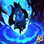
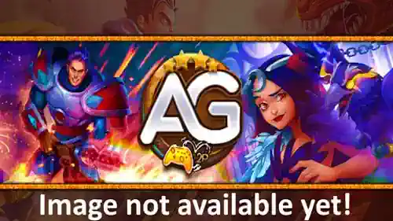
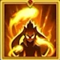
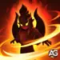
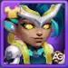
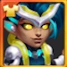
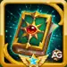
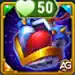
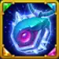

Aidan-Leitfaden: Relikte und Fähigkeiten für Hero Wars Alliance
- Von: Alexandre Domingos. .
Aidan kann ein Team am Rande der Niederlage in ein Team verwandeln, das einfach nicht fällt. In diesem Leitfaden zu Hero Wars Alliance erkläre ich seine Heilung, seine Schilde und sein legendäres Relikt. So erkennst du, woher diese Überlebensfähigkeit kommt und welche Verbesserungen deine Ressourcen zuerst verdienen.
Mich beeindruckt, wie seine Fähigkeiten Opfer und Erholung miteinander verbinden. Schaden durch verbündete Fähigkeiten schafft zusätzliche Heilungsziele, Kayla bekommt durch Wiederbelebung eine weitere Chance, und das Relikt ergänzt Schutz und wachsende Intelligenz. Die eigentliche Entscheidung lautet: Braucht dein Aidan stärkere Heilung oder genügend Widerstandsfähigkeit, um sie weiterhin liefern zu können?


Aidan-Inhaltsverzeichnis
- Wer ist Aidan?
- Kampfrolle und Bewertungen
- Vor- und Nachteile
- Vergleich der maximalen Talismanwerte
- Talisman-Leitfaden
- Fähigkeiten des legendären Relikts und Ausbaupriorität
- Reich-Fähigkeiten
- Beste Skins und Ausbaupriorität
- Ausbaupriorität der Artefakte
- Ausbaupriorität der Glyphen
- So konterst du Aidan
- Aidans Synergien
- Beste Teams und beliebte ältere Teams
- Alexandres abschließendes Urteil
Wer ist Aidan in Hero Wars Alliance?
Aidan ist ein Heiler in der hinteren Reihe vom Weg des Chaos. Seine Aufgabe ist es, Verbündete durch Heilung, vorübergehende Gesundheitserhöhungen und Notfallschilde im Kampf zu halten. Zusätzlich unterstützt er Kayla durch Wiederbelebung.

- Hauptklasse: Heiler
- Position: Hintere Reihe
- Hauptattribut: Intelligenz
- Fraktion: Weg des Chaos
- Wichtigste Synergie: Kayla, Chaos-Verbündete und Teams, die Schaden durch verbündete Fähigkeiten erleiden.
Feuerumarmung heilt Verbündete, die seit dem vorherigen Einsatz Schaden durch verbündete Fähigkeiten erlitten haben. Dadurch werden verbündete Opfer zu einem Teil seines Erholungszyklus. Chaos-Verbündete erhalten stärkere Heilung durch Feuerumarmung und mehrere Relikteffekte, während Kayla eigene Wiederbelebungsmechaniken besitzt.
Meine erste Priorität ist, Aidan am Leben zu halten. Starke Heilungsformeln helfen nur, solange er seine Fähigkeiten weiterhin einsetzen kann. Seine eigene ultimative Fähigkeit verbraucht zudem einen Teil seiner maximalen Gesundheit.
Aidans Vor- und Nachteile - Hero Wars Alliance
✅ Vorteile
- Heilt mehrere Verbündete nach Schaden durch verbündete Fähigkeiten.
- Stärkere Heilung für Chaos-Helden.
- Notfallschilde schützen Verbündete mit wenig Gesundheit.
- Gezielte Unterstützung zur Wiederbelebung von Kayla.
- Reliktverbesserungen ergänzen Schutz, Heilung und stapelbare Intelligenz.
❌ Nachteile
- Die ultimative Fähigkeit verbraucht 20% seiner eigenen maximalen Gesundheit.
- Begrenzter direkter Schaden und keine aufgeführte Massenkontrolle.
- Für Kaylas Wiederbelebung muss Kayla im Team sein.
- Der Schildschutz hält nur 4 Sekunden.
- Das Intelligenzwachstum benötigt Schaden durch verbündete Fähigkeiten, um die Auslöseschwelle zu erreichen.
Aidan - Vergleich der maximalen Talismanwerte
Diese Werte eines maximal ausgebauten Helden bilden die Grundlage für die folgenden Berechnungen. Sie gelten vor vorübergehenden Gesundheits- und Intelligenzgewinnen im Kampf; die Attributsgewinne des Relikts werden nicht erneut addiert.
| Attribut | Talisman 1: Talisman der Asche | Talisman 2: Talisman der Unerbittlichkeit |
|---|---|---|
Intelligenz | 17,843 | 15,843 |
Agilität | 3,679 | 3,679 |
| 4,137 | 4,137 | |
| 1,129,442 | 1,315,480 | |
| 37,314 | 35,314 | |
| 230,375 | 203,585 | |
| 39,840 | 39,840 | |
Magische Verteidigung | 43,200 | 41,200 |
| 3,380 | 7,780 | |
| 278,122 | 279,449 |
Aidans Talisman-Leitfaden - Hero Wars Alliance
Du wählst einen Talisman für den Kampf. Es gelten nur die Boni des ausgerüsteten Talismans; der Besitz beider kombiniert ihre Werte nicht. Anders als bei Skin-Boni verändert diese Wahl, welche Vorteile Aidan mit in den Kampf bringt. Beurteile die drei Neuwürfelplätze anhand ihrer gemeinsamen Summe.
1 - Talisman der Asche

| Talisman | Hauptattributsbonus |
|---|---|
| Intelligenz +2,000 |
| Platz 1 | Platz 2 | Platz 3 | Gesamter Neuwürfelbonus |
|---|---|---|---|
| Magischer Angriff +6,600 | Magischer Angriff +6,600 | Magischer Angriff +6,600 | Magischer Angriff +19,800 |
Der Intelligenzbonus gewährt +6,000 magischen Angriff, +2,000 magische Verteidigung und +2,000 physikalischen Angriff. Zusammen mit dem kombinierten Neuwürfelbonus von +19,800 Magischer Angriff stärkt der Talisman der Asche Feuerumarmung, die Selbstheilung und die mit magischem Angriff skalierenden Relikteffekte.
2 - Talisman der Unerbittlichkeit

| Talisman | Hauptattributsbonus |
|---|---|
| Zähigkeit +4,000 |
| Platz 1 | Platz 2 | Platz 3 | Gesamter Neuwürfelbonus |
|---|---|---|---|
| Gesundheit +60,500 | Gesundheit +60,500 | Gesundheit +60,500 | Gesundheit +181,500 |
Der Talisman der Unerbittlichkeit gewährt +4,000 Zähigkeit und einen kombinierten Neuwürfelbonus von +181,500 Gesundheit. Der angegebene maximale Ausbau erreicht 1,315,480 Gesundheit und 7,780 Zähigkeit. Mehr maximale Gesundheit erhöht die gesundheitsabhängigen Werte von Phönixritual; Zähigkeit hilft unter 50% Gesundheit gegen gegnerischen Schaden, reduziert aber nicht Aidans Selbstschaden.
Welchen Talisman solltest du für Aidan verwenden?
Meine Standardwahl für stärkere Heilung ist der Talisman der Asche. Sein magischer Angriff von 230,375 ermöglicht Feuerumarmung 73,912.5 Heilung pro gewöhnlichem Ziel, gegenüber 65,875.5 mit dem Talisman der Unerbittlichkeit. Er verbessert außerdem die Schadensreduzierung auf Stufe 10 und den anfänglichen Intelligenzgewinn durch Preis der Weisheit. Der Talisman-Leitfaden empfiehlt ebenfalls Aidans ersten Talisman.
Ich würde zum Talisman der Unerbittlichkeit wechseln, wenn Aidan mehr Widerstandsfähigkeit benötigt. Er bietet 186,038 mehr maximale Gesundheit und 4,400 mehr Zähigkeit bei den angegebenen vollständigen Ausbauten. Die Gesundheitserhöhung für Verbündete durch Phönixritual steigt von 228,288.4 auf 265,496, aber seine eigenen Gesundheitskosten steigen ebenfalls von 225,888.4 auf 263,096. Der Nutzen von Zähigkeit hängt von niedriger Gesundheit und dem Hauptattribut des Angreifers ab; es ist keine feste prozentuale Schadensreduzierung.
Alexandres Tipps: Wenn Aidan überlebt, das Team aber mehr Erholung braucht, beginne mit dem Talisman der Asche. Fällt er, bevor er den Heilungszyklus aufrechterhalten kann, probiere den Talisman der Unerbittlichkeit. Beurteile das Ergebnis daran, ob er das Team im Kampf hält, und nicht allein anhand der Gesamtstärke.
Aidans legendäres Relikt: Ausbaupriorität der Fähigkeiten - Hero Wars Alliance
Verstehe Aidans Heilung, Schilde und Reliktverbesserungen, vergleiche beide Talismane und investiere zuerst in Fähigkeiten, die dein Team im Kampf am Leben halten.
Behalte die folgende Anzeigereihenfolge der Fähigkeiten bei. Meine empfohlene Investitionsreihenfolge für die Grundfähigkeiten lautet Feuerumarmung, Flammenschild, Phönixritual und danach Bande des Feuers. Reliktfähigkeiten werden auf der jeweils erforderlichen Reliktstufe freigeschaltet; ihre Prioritätsangaben beschreiben den Investitionswert und keine separate manuelle Freischaltreihenfolge.
Alle Berechnungen verwenden die obigen Maximalwerte: 230,375 magischer Angriff und 1,129,442 Gesundheit mit dem Talisman der Asche oder 203,585 magischer Angriff und 1,315,480 Gesundheit mit dem Talisman der Unerbittlichkeit. Dezimalergebnisse zeigen die Formel vor einer möglichen Rundung im Spiel. Die Teamgesundheit und spätere Verstärkungen im Kampf können das tatsächliche Ergebnis verändern.
| Reliktstufe | Freischaltung oder Verbesserung einer Fähigkeit |
|---|---|
| 1 | Phönixpakt: Wiederbelebung von Kayla und Heilung der Verbündeten. |
| 10 | Feuerumarmung: Schadensreduzierung pro Angriff für geheilte Verbündete. |
| 20 | Flammenschild: Heilung, wenn der Schild entfernt wird. |
| 30 | Preis der Weisheit: stapelbare Intelligenz durch Schaden verbündeter Fähigkeiten. |
Gesamte Attributsgewinne des Relikts auf Stufe 30: Gesundheit +215,429 und magischer Angriff +64,542. Das sind Attributsgewinne des Ausbaus, getrennt von den vorübergehenden Kampf-Stapeln von Preis der Weisheit.

1. - Phönixritual (Ultimative Fähigkeit)
Beschreibung im Spiel: Aidan verbraucht 20% seiner maximalen Gesundheit, um die aktuelle und maximale Gesundheit der Verbündeten zu erhöhen. Die betroffenen Verbündeten brennen 8 Sekunden lang und verlieren dabei die zusätzliche Gesundheit. Belebt Kayla wieder, wenn sie gefallen ist. Seine Fähigkeiten fügen verbündeten Helden unter 25% Gesundheit keinen Schaden mehr zu.

Erklärung der Fähigkeit: Aidan bezahlt mit einem Teil seiner eigenen Gesundheit, um Verbündeten einen vorübergehenden Puffer zu geben. Die Erhöhung für Verbündete beträgt 20% Gesundheit + 2400; seine eigenen Kosten betragen 20% seiner maximalen Gesundheit. Die zusätzliche Gesundheit der Verbündeten wird durch das Brennen verbraucht, und zwar über 8 Sekunden. Es handelt sich also um vorübergehenden Schutz statt um eine dauerhafte Gesundheitserhöhung. Wenn Kayla gefallen ist, belebt die Fähigkeit sie wieder. Seine Fähigkeiten fügen verbündeten Helden keinen Schaden mehr zu, sobald sie unter 25% Gesundheit fallen; dieser Schutz macht sie nicht gegen Gegner immun.
Formel mit Talisman 1: Talisman der Asche
- Erhöhung der aktuellen und maximalen Gesundheit der Verbündeten: 20% Gesundheit + 2400 = 228,288.4 (0.20 × 1,129,442 + 2,400)
- Aidans eigene Gesundheitskosten: 20% maximale Gesundheit = 225,888.4 (0.20 × 1,129,442)
Formel mit Talisman 2: Talisman der Unerbittlichkeit
- Erhöhung der aktuellen und maximalen Gesundheit der Verbündeten: 20% Gesundheit + 2400 = 265,496 (0.20 × 1,315,480 + 2,400)
- Aidans eigene Gesundheitskosten: 20% maximale Gesundheit = 263,096 (0.20 × 1,315,480)
Informationen zur Fähigkeitsanimation: Brenndauer: 8 Sekunden. Der gesamte Brandschaden entfernt die gewährte zusätzliche Gesundheit. Schlüsselwörter: Gesundheitserhöhung, Brennen, Wiederbelebung, Selbstschaden.
Ausbaupriorität: Hoch – Der vorübergehende Gesundheitspuffer und Kaylas Wiederbelebung können einen Kampf retten. Halte die Fähigkeit ausgebaut, während regelmäßige Heilung und Notfallschilde zuerst die begrenzten Ressourcen bekommen. Wegen der eigenen Gesundheitskosten funktioniert sie am besten innerhalb eines zuverlässigen Erholungszyklus.
2. - Feuerumarmung
Beschreibung im Spiel: Stellt Gesundheit beim Verbündeten mit dem niedrigsten Gesundheitsprozentsatz und bei Verbündeten wieder her, die seit dem vorherigen Einsatz Schaden durch verbündete Fähigkeiten erlitten haben. Chaos-Helden erhalten stärkere Heilung.

Erklärung der Fähigkeit: Betrachte diese Fähigkeit als Aidans Erholungsmotor. Sie heilt den Verbündeten mit dem niedrigsten Gesundheitsprozentsatz und Verbündete, die seit dem vorherigen Einsatz durch verbündete Fähigkeiten verletzt wurden. Die gewöhnliche Heilung beträgt 30% Magischer Angriff + 4800; die Chaos-Heilung beträgt 60% Magischer Angriff + 9600. Die Chaos-Formel ist doppelt so hoch wie die gewöhnliche Formel, was Fraktionssynergien besonders wertvoll macht.
Formel mit Talisman 1: Talisman der Asche
- Heilung eines gewöhnlichen Verbündeten: 30% Magischer Angriff + 4800 = 73,912.5 (0.30 × 230,375 + 4,800)
- Heilung eines Chaos-Verbündeten: 60% Magischer Angriff + 9600 = 147,825 (0.60 × 230,375 + 9,600)
Formel mit Talisman 2: Talisman der Unerbittlichkeit
- Heilung eines gewöhnlichen Verbündeten: 30% Magischer Angriff + 4800 = 65,875.5 (0.30 × 203,585 + 4,800)
- Heilung eines Chaos-Verbündeten: 60% Magischer Angriff + 9600 = 131,751 (0.60 × 203,585 + 9,600)

Feuerumarmung (Verbesserte Fähigkeit) - Legendäres Relikt: Stufe 10
Beschreibung im Spiel: Durch Feuerumarmung geheilte Verbündete erleiden 8 Sekunden lang weniger Schaden durch jeden Angriff.

Erklärung der Fähigkeit: Geheilte Verbündete erleiden außerdem weniger Schaden durch jeden Angriff, und zwar für 8 Sekunden. Die Reduzierung beträgt 10% Magischer Angriff: ein fester Betrag, der aus Aidans magischem Angriff berechnet wird, keine Reduzierung des gegnerischen Schadens um 10%. So erhält der Heilungseinsatz eine zweite Aufgabe: dem geheilten Verbündeten beim Überleben der folgenden Angriffe zu helfen.
Formel mit Talisman 1: Talisman der Asche
- Schadensreduzierung pro Angriff: 10% Magischer Angriff = 23,037.5 (0.10 × 230,375)
Formel mit Talisman 2: Talisman der Unerbittlichkeit
- Schadensreduzierung pro Angriff: 10% Magischer Angriff = 20,358.5 (0.10 × 203,585)
Informationen zur Fähigkeitsanimation: Dauer des legendären Schutzes: 8 Sekunden. Schlüsselwort: Heilung. Die legendäre Verbesserung wird freigeschaltet auf Reliktstufe 10.
Ausbaupriorität: Sehr hoch – Das ist meine erste Investition in die Grundfähigkeiten: Sie stellt im gesamten verbündeten Opferzyklus Gesundheit wieder her, und ihre Reliktverbesserung auf Stufe 10 ergänzt Schutz nach der Heilung. Stärkere Erholung hält sowohl Aidan als auch die Schadensverursacher aktiv.

3. - Bande des Feuers
Beschreibung im Spiel: Entzieht 2.5% der maximalen Gesundheit des Verbündeten mit dem höchsten Gesundheitsprozentsatz sowie weiterer Verbündeter über 80% Gesundheit. Aidan erhält diesen Betrag als aktuelle und maximale Gesundheit und heilt sich selbst.

Erklärung der Fähigkeit: Aidan entzieht 2.5% der maximalen Gesundheit dem Verbündeten mit dem höchsten Gesundheitsprozentsatz und weiteren Verbündeten über 80% Gesundheit. Er erhält die gesamte geopferte Menge als aktuelle und maximale Gesundheit und heilt sich anschließend um 50% Magischer Angriff + 10000. Das hilft ihm weiterzukämpfen und gibt Feuerumarmung zusätzliche Ziele, die verbündeten Schaden erlitten haben.
Die Gesundheitsübertragung hängt von den betroffenen Verbündeten ab: Gesamter Gesundheitsgewinn = Summe von (0.025 × maximale Gesundheit jedes betroffenen Verbündeten). Verwende ihre tatsächlichen Gesundheitswerte; Aidans eigene maximale Gesundheit allein kann diese Summe nicht bestimmen.
Formel mit Talisman 1: Talisman der Asche
- Aidans Selbstheilung: 50% Magischer Angriff + 10000 = 125,187.5 (0.50 × 230,375 + 10,000)
Formel mit Talisman 2: Talisman der Unerbittlichkeit
- Aidans Selbstheilung: 50% Magischer Angriff + 10000 = 111,792.5 (0.50 × 203,585 + 10,000)
Informationen zur Fähigkeitsanimation: Opfer: 2.5% der maximalen Gesundheit der betroffenen Verbündeten. Schwelle für zusätzliche Verbündete: über 80% Gesundheit. Schlüsselwörter: Heilung, Gesundheitserhöhung, Selbstschaden.
Ausbaupriorität: Mittel – Die Selbstheilung unterstützt Aidans Überleben, aber direkte Heilung von Verbündeten und Notfallschilde verdienen gewöhnlich zuerst Investitionen. Die feste Übertragung von 2.5% hängt von der Gesundheit der Verbündeten ab. Behandle sie daher nicht als höheren Prozentsatz, nur weil du diese Fähigkeit ausbaust.
4. - Flammenschild
Beschreibung im Spiel: Schützt Aidan oder einen Verbündeten, der zu Kampfbeginn anwesend war, wenn dessen Gesundheit unter 30% fällt. Der Schild absorbiert 4 Sekunden lang physikalischen und magischen Schaden und hat für jeden Helden eine separate Abklingzeit von 15 Sekunden.

Erklärung der Fähigkeit: Wenn Aidan oder ein berechtigter Verbündeter unter 30% Gesundheit fällt, absorbiert ein Schild physikalischen und magischen Schaden für 4 Sekunden. Seine Haltbarkeit beträgt 16% der kombinierten maximalen Gesundheit der verbündeten Helden. Jeder Held besitzt eine separate Abklingzeit von 15 Sekunden. Wenn ein Verbündeter seinen Schild auslöst, werden also nicht die Schilde aller anderen Verbündeten auf Abklingzeit gesetzt.
Verwende zur Berechnung der Haltbarkeit Schild = 0.16 × kombinierte maximale Gesundheit der Verbündeten. Bei beiden Talismanen wird die maximale Gesundheit der anderen Verbündeten benötigt, um einen vollständigen Zahlenwert zu erhalten. Bei derselben anfänglichen Teamzusammenstellung gewährt der Talisman der Unerbittlichkeit zusätzlich 29,766.08 Schildhaltbarkeit (0.16 × 186,038) allein durch Aidans zusätzliche Gesundheit.
Flammenschild (Verbesserte Fähigkeit) - Legendäres Relikt: Stufe 20
Beschreibung im Spiel: Wenn Flammenschild entfernt wird, erhält der geschützte Verbündete Heilung. Chaos-Helden erhalten mehr Heilung.

Erklärung der Fähigkeit: Wenn der Schild entfernt wird, erhält der geschützte Verbündete Heilung: 30% Magischer Angriff für einen gewöhnlichen Verbündeten oder 60% Magischer Angriff für einen Chaos-Verbündeten. Der Schild verschafft bei niedriger Gesundheit Zeit; diese anschließende Heilung hilft dem geschützten Helden, sich nach dem Ende des Schutzes zu erholen.
Formel mit Talisman 1: Talisman der Asche
- Heilung eines gewöhnlichen Verbündeten: 30% Magischer Angriff = 69,112.5 (0.30 × 230,375)
- Heilung eines Chaos-Verbündeten: 60% Magischer Angriff = 138,225 (0.60 × 230,375)
Formel mit Talisman 2: Talisman der Unerbittlichkeit
- Heilung eines gewöhnlichen Verbündeten: 30% Magischer Angriff = 61,075.5 (0.30 × 203,585)
- Heilung eines Chaos-Verbündeten: 60% Magischer Angriff = 122,151 (0.60 × 203,585)
Informationen zur Fähigkeitsanimation: Auslöser: unter 30% Gesundheit. Dauer: 4 Sekunden. Abklingzeit: 15 Sekunden pro Held. Absorbiert: physikalischen und magischen Schaden. Berechtigte Verbündete müssen zu Kampfbeginn anwesend gewesen sein. Die legendäre Verbesserung wird freigeschaltet auf Reliktstufe 20.
Ausbaupriorität: Sehr hoch – Ein Schild erscheint genau dann, wenn ein Verbündeter kurz vor dem Fall steht. Ich setze diese Grundfähigkeit bei Investitionen an zweite Stelle, weil sie Feuerumarmung ergänzt. Die anschließende Heilung auf Stufe 20 fügt diesem Notfallschutz Erholung hinzu. Ihre Haltbarkeit hängt weiterhin von der Teamgesundheit ab, nicht nur von der Fähigkeitsstufe.
5. - Phönixpakt (Neue Fähigkeit) - Legendäres Relikt: Stufe 1
Beschreibung im Spiel: Alle 15 Sekunden belebt Aidan die verbündete Kayla wieder, falls sie tot ist, und heilt anschließend seine Verbündeten. Chaos-Helden erhalten mehr Heilung.

Erklärung der Fähigkeit: Alle 15 Sekunden kann diese Fähigkeit Kayla wiederbeleben, wenn sie tot ist, und anschließend Verbündete heilen. Die gewöhnliche Heilung beträgt 20% Magischer Angriff; die Chaos-Heilung beträgt 40% Magischer Angriff. Die Heilung gehört zu diesem bedingten Wiederbelebungsereignis. Rechne nicht mit einer bedingungslosen Teamheilung alle 15 Sekunden, wenn Kayla lebt oder nicht im Team ist.
Formel mit Talisman 1: Talisman der Asche
- Heilung eines gewöhnlichen Verbündeten: 20% Magischer Angriff = 46,075 (0.20 × 230,375)
- Heilung eines Chaos-Verbündeten: 40% Magischer Angriff = 92,150 (0.40 × 230,375)
Formel mit Talisman 2: Talisman der Unerbittlichkeit
- Heilung eines gewöhnlichen Verbündeten: 20% Magischer Angriff = 40,717 (0.20 × 203,585)
- Heilung eines Chaos-Verbündeten: 40% Magischer Angriff = 81,434 (0.40 × 203,585)
Informationen zur Fähigkeitsanimation: Intervall: 15 Sekunden. Bedingung: die verbündete Kayla ist tot. Schlüsselwörter: Wiederbelebung, Heilung.
Ausbaupriorität: Sehr hoch mit Kayla – Die Wiederbelebung deiner Schadensverursacherin kann dem gesamten Team eine weitere Chance geben. Deshalb ist die erste Reliktfreischaltung in einer Kayla-Aufstellung besonders wertvoll. Ohne Kayla kann diese Wiederbelebungsbedingung nicht erfüllt werden; beurteile weitere Reliktinvestitionen anhand der anderen Verbesserungen.
6. - Preis der Weisheit (Neue Fähigkeit) - Legendäres Relikt: Stufe 30
Beschreibung im Spiel: Wenn der insgesamt vom Team erlittene Schaden durch verbündete Fähigkeiten die Auslöseschwelle erreicht, erhält Aidan für den Rest des Kampfes Intelligenz. Der Intelligenzbonus ist bis zu 5-mal stapelbar.

Erklärung der Fähigkeit: Schaden durch verbündete Fähigkeiten wird zu einer Wachstumsquelle. Sobald die angesammelte Summe 100% Gesundheit erreicht, erhält Aidan Intelligenz in Höhe von 5% Magischer Angriff. Der Effekt hält bis zum Kampfende an und ist stapelbar bis zu 5-mal. Mehr Intelligenz gewährt magischen Angriff und stärkt damit seine auf magischem Angriff basierende Erholung und seine Relikteffekte.
Die folgenden Werte beschreiben den ersten Stapel mit den aufgeführten Anfangswerten. Spätere Stapel können abweichen, wenn sich sein magischer Angriff verändert. Fünf Stapel sind das Limit, nicht fünf garantierte Auslösungen. Multipliziere den ersten Stapelwert nicht einfach mit fünf und stelle ihn als festen Endbonus dar.
Formel mit Talisman 1: Talisman der Asche
- Anfänglicher Intelligenzgewinn pro Stapel: 5% Magischer Angriff = 11,518.75 (0.05 × 230,375)
- Aus dieser Intelligenz abgeleiteter magischer Angriff: 3 × gewonnene Intelligenz = 34,556.25 (3 × 11,518.75)
- Aus dieser Intelligenz abgeleitete magische Verteidigung: 1 × gewonnene Intelligenz = 11,518.75 (1 × 11,518.75)
- Physikalischer Angriff durch Intelligenz als Hauptattribut: 1 × gewonnene Intelligenz = 11,518.75 (1 × 11,518.75)
Formel mit Talisman 2: Talisman der Unerbittlichkeit
- Anfänglicher Intelligenzgewinn pro Stapel: 5% Magischer Angriff = 10,179.25 (0.05 × 203,585)
- Aus dieser Intelligenz abgeleiteter magischer Angriff: 3 × gewonnene Intelligenz = 30,537.75 (3 × 10,179.25)
- Aus dieser Intelligenz abgeleitete magische Verteidigung: 1 × gewonnene Intelligenz = 10,179.25 (1 × 10,179.25)
- Physikalischer Angriff durch Intelligenz als Hauptattribut: 1 × gewonnene Intelligenz = 10,179.25 (1 × 10,179.25)
Informationen zur Fähigkeitsanimation: Auslöseschwelle: 100% Gesundheit als angesammelter Schaden durch verbündete Fähigkeiten. Maximale Stapel: 5. Dauer: bis zum Ende des Kampfes. Schlüsselwort: Verstärkung.
Ausbaupriorität: Hoch – Das Intelligenzwachstum kann in längeren Kämpfen mehrere Heilungs- und Schutzformeln verbessern. Sein Wert hängt davon ab, die Schwelle für verbündeten Schaden zu erreichen und Aidan am Leben zu halten. Die früheren Heilungs- und Schutzverbesserungen des Relikts schaffen die Grundlage für diese Skalierung.
Alexandres Tipps: Baue zuerst den Erholungszyklus auf: Feuerumarmung hält das Team gesund, Flammenschild hilft einem Verbündeten durch einen gefährlichen Moment, und das Relikt ergänzt beide um zusätzlichen Schutz und Wachstum. Mit Kayla ist die Wiederbelebung auf Stufe 1 ein unmittelbarer Grund, das Relikt freizuschalten. Wähle deinen Talisman erst, nachdem du geprüft hast, ob das Team mehr Heilung oder dein Aidan mehr Zeit am Leben braucht.
Aidans Reich-Fähigkeiten - Hero Wars Alliance
Aidans Reich-Fähigkeiten unterstützen Truppen, anstatt die obigen Formeln für Heldenkämpfe zu verwenden. Halte diese Boni bei der Planung seines Arena-Ausbaus getrennt.
1. - Herz des Phönix
Beschreibung im Spiel: Erhöht die Gesundheit aller Truppen um 12%.
Effekt auf Stufe 5: Truppengesundheit +12%. Das ist ein direkter Widerstandsfähigkeitsbonus für Truppen.
Ausbaupriorität: Hoch – Meine erste Wahl im Reich für beständigen Schutz, weil der Gesundheitsbonus nicht von einer zufälligen Auslösung abhängt.
2. - Hitze der Ewigkeit
Beschreibung im Spiel: Truppenangriffe haben eine Chance von 15%, einen Schild zu gewähren, der 15% Schaden für 1 Runde absorbiert.
Effekt auf Stufe 5: Truppenangriffe haben eine Chance von 15% , einen Schild zu gewähren, der 15% Schaden absorbiert, und zwar für 1 Runde.
Ausbaupriorität: Mittel – Nützlicher zusätzlicher Schutz nach der verlässlichen Gesundheitsverbesserung. Der Schild hängt von seiner Auslösung ab. Plane deshalb nicht so, als würde er bei jedem Angriff aktiviert.
Bester Skin für Aidan - Hero Wars Alliance
Wähle Aidans besten Skin, indem du stärkere Heilung gegen Überleben abwägst. Gib deine Skin-Steine dann dort aus, wo sie dein Team am längsten im Kampf halten.
Meine empfohlene Skin-Priorität für Aidan: Kybernetische Skin+ → Sonnen-Skin → Standard-Skin → Flammender Skin+ → Himmels-Skin → Maskeraden-Skin. Diese Reihenfolge setzt voraus, dass Aidan lange genug für seine Fähigkeiten überlebt. Ziehe Gesundheits-Skins vor, wenn er immer wieder früh fällt, oder Rüstung, wenn physikalischer Schaden das unmittelbare Problem ist.
Skin-Boni werden unabhängig vom ausgerüsteten Aussehen addiert. Die folgenden Einträge behalten ihre Anzeigereihenfolge bei; die Ausbaupriorität und der Investitionsrang zeigen, welchen du zuerst entwickeln solltest. Priorisiere Skins, die du bereits besitzt, bevor du mit einem noch nicht freigeschalteten Skin+ planst.
Standard-Skin
Maximaler Bonus: Intelligenz +1,365. Daraus entstehen +4,095 Magischer Angriff (1,365 × 3), +1,365 Magische Verteidigungund +1,365 Physikalischer Angriff weil Intelligenz Aidans Hauptattribut ist.
Gesamte Ausbaukosten: 30,825 Intelligenz-Skin-Steine.
Ausbaupriorität: Hoch — Investitionsrang 3 – Intelligenz verbessert seine Heilung und die auf magischem Angriff basierenden Relikteffekte und erhöht zugleich die magische Verteidigung. Die geringeren gesamten Steinkosten machen diesen Skin zu einer praktischen frühen Option, wenn du mit begrenzten Ressourcen ausbaust.
Sonnen-Skin
Maximaler Bonus: Magischer Angriff +10,650.
Gesamte Ausbaukosten: 50,410 Intelligenz-Skin-Steine.
Ausbaupriorität: Sehr hoch — Investitionsrang 2 – Eine direkte Verbesserung der Heilung, der Schadensreduzierung des Relikts auf Stufe 10 und des Intelligenzgewinns von Preis der Weisheit. Wenn du den kybernetischen Skin+ nicht besitzt, wäre der Sonnen-Skin mein erster Ausbau für magischen Angriff.
Himmels-Skin
Maximaler Bonus: Gesundheit +106,645.
Gesamte Ausbaukosten: 50,410 Intelligenz-Skin-Steine.
Ausbaupriorität: Mittel — Investitionsrang 5 – Mehr Gesundheit verbessert Aidans Widerstandsfähigkeit, die vorübergehende Gesundheit der Verbündeten durch Phönixritual und seinen Beitrag zur Teamgesundheit für Flammenschild. Ziehe diesen Skin vor, wenn er mehr Überlebensfähigkeit braucht und du den flammenden Skin+ nicht besitzt.
Maskeraden-Skin
Maximaler Bonus: Rüstung +10,650.
Gesamte Ausbaukosten: 50,410 Intelligenz-Skin-Steine.
Ausbaupriorität: Niedrig — Investitionsrang 6 – Rüstung schützt gegen physikalischen Schaden, stärkt aber weder seine Heilung noch seine gesundheitsabhängigen Formeln. Erhöhe ihre Priorität, wenn physikalische Angreifer der Grund dafür sind, dass Aidan nicht am Leben bleibt. Eine niedrige allgemeine Priorität macht die Verbesserung nicht unnötig.


Kybernetische Skin / Kybernetische Skin+
Maximaler Bonus mit freigeschaltetem Skin+: Magischer Angriff +21,300, doppelt so viel wie der Bonus der normalen Version von +10,650. Der doppelte Bonus erfordert die Skin+-Verbesserung; der normale Skin allein gewährt ihn nicht.
Gesamte Ausbaukosten: 50,410 Intelligenz-Skin-Steine. Die Skin+-Version hat dieselben Steinkosten für den Stufenaufstieg wie die normale Version.
Ausbaupriorität: Sehr hoch — Investitionsrang 1 – Das ist für mich Aidans bester Skin, wenn Skin+ verfügbar ist und sein Überleben gesichert ist. Er liefert den höchsten aufgeführten Skin-Bonus für magischen Angriff und verbessert damit mehrere Heilungs- und Reliktformeln gleichzeitig. Sein Wert liegt in Erholung und Schutz für das Team.

Flammender Skin / Flammender Skin+
Maximaler Bonus mit freigeschaltetem Skin+: Gesundheit +213,290, doppelt so viel wie der Bonus der normalen Version von +106,645. Der doppelte Bonus erfordert die Skin+-Verbesserung.
Gesamte Ausbaukosten: 50,410 Intelligenz-Skin-Steine. Die Skin+-Version hat dieselben Steinkosten für den Stufenaufstieg wie die normale Version.
Ausbaupriorität: Hoch — Investitionsrang 4 – Der höchste aufgeführte Gesundheitsbonus eines Skins ist meine erste Skin-Investition für Widerstandsfähigkeit, wenn Skin+ freigeschaltet ist. Ziehe ihn den Heilungs-Skins vor, wenn Aidan stirbt, bevor er das Team unterstützen kann. Mehr maximale Gesundheit erhöht außerdem die absoluten eigenen Gesundheitskosten von Phönixritual.
Alexandres Tipps: Verbessere bei einem stabilen Aidan zuerst die Heilung und danach die Widerstandsfähigkeit. Bei einem Ausbau mit Überlebensproblemen würde ich den flammenden Skin+ oder den Himmels-Skin vorziehen. Ein Heiler, der für einen weiteren Fähigkeitseinsatz überlebt, kann mehr helfen als eine stärkere Heilungsformel, die nie zum Einsatz kommt.
Aidans Artefakt-Ausbaupriorität - Hero Wars Alliance
Richte Aidans Artefakte auf Heilung und Überleben aus. Passe die Waffeninvestition dann an, wenn das Team mehr magische Verteidigung gegen gegnerische Zauber benötigt.
Meine empfohlene Artefaktpriorität für Aidan: Buch → Ring → Waffe. Das Buch verbindet Gesundheit und magischen Angriff, der Ring erhöht den magischen Angriff über Intelligenz, und die Waffe gewährt dem Team einen vorübergehenden Verteidigungsbonus.

Die Einträge behalten die Anzeigereihenfolge Waffe, Buch, Ring bei. Die folgenden Werte gelten für Artefakte auf Stufe 100 mit 6 Sternen.

1. Artefakt - Waffe: Phönixsiegel
Der Einsatz von Phönixritual aktiviert einen Teambonus von +32,040 Magische Verteidigung absorbiert, und zwar für 9 Sekunden, mit einer Auslösechance von 100% bei 6 Sternen. Das schützt das Team vor magischem Schaden, solange der Bonus aktiv ist.
Ausbaupriorität: Mittel — Investitionsrang 3 – Wertvoller Teamschutz, der aber von der Aktivierung der ultimativen Fähigkeit abhängt und Aidans Heilung nicht direkt erhöht. Ziehe die Waffe vor, wenn gegnerischer magischer Schaden der Hauptgrund für die Niederlagen deines Teams ist.

2. Artefakt - Buch: Buch des arkanen Wissens
Maximale Boni: Magischer Angriff +10,680 und Gesundheit +53,394. Beide gehören Aidan: Der erste verbessert seine Heilung und die auf magischem Angriff basierenden Relikteffekte, der zweite unterstützt das Überleben und seine gesundheitsabhängigen Mechaniken.
Ausbaupriorität: Sehr hoch — Investitionsrang 1 – Meine erste allgemeine Investition, weil sie Erholung und Widerstandsfähigkeit gemeinsam stärkt. Dieses Gleichgewicht hilft Aidan, lange genug aktiv zu bleiben, damit seine Reliktverbesserungen einen Unterschied machen.

3. Artefakt - Ring: Ring der Intelligenz
Maximaler Bonus: Intelligenz +3,990. Daraus entstehen +11,970 Magischer Angriff (3,990 × 3), +3,990 Magische Verteidigungund +3,990 Physikalischer Angriff. Diese Attribute gehören Aidan; Verbündete profitieren über seine verbesserte Heilung und seine Relikteffekte.
Ausbaupriorität: Hoch — Investitionsrang 2 – Eine starke Ergänzung nach dem Buch. Auf maximaler Stufe liefert der Ring mehr magischen Angriff als das Buch, aber keinen direkten Gesundheitsbonus. Wenn Aidans Überleben bereits gesichert und Heilung die größte Lücke ist, lässt sich dieses Artefakt sinnvoll vorziehen.
Aidans Glyphen-Ausbaupriorität - Hero Wars Alliance
Baue Aidans Glyphen aus, um Heilung und gesundheitsabhängigen Schutz zu stärken. Wähle Rüstung oder magische Verteidigung anschließend anhand des Schadens, der ihn bedroht.
Meine empfohlene Glyphenpriorität für Aidan: Magischer Angriff → Gesundheit → Intelligenz → Magische Verteidigung → Rüstung. Tausche die letzten beiden, wenn physikalischer Schaden die größere Bedrohung ist. Ziehe Gesundheit oder die passende Verteidigung vor, wenn Aidan weiterhin fällt.
Behalte unten die Anzeigereihenfolge der Glyphen aus dem Spiel bei. Jeder Eintrag zeigt seinen Bonus auf Stufe 80, während der Investitionsrang separat aufgeführt ist.

1. Glyphe - Magischer Angriff
Werte auf Stufe 80: Magischer Angriff +12,850.
Ausbaupriorität: Sehr hoch — Investitionsrang 1 – Meine erste allgemeine Glyphenwahl für stärkere Heilung. Sie verbessert außerdem die Schadensreduzierung pro Angriff durch das Relikt, die Heilung beim Entfernen des Schildes und den Intelligenzgewinn. Diese Verbesserungen helfen Aidan, das Team zu versorgen, statt ihn zu einem Schadensverursacher zu machen.

2. Glyphe - Rüstung
Werte auf Stufe 80: Rüstung +12,850.
Ausbaupriorität: Niedrig — Investitionsrang 5 – Eine situationsabhängige Verteidigungsinvestition gegen physikalischen Schaden. Sie verbessert seine Heilungsformeln nicht. Wenn physikalische Angreifer Aidan töten, würde ich sie jedoch vor magischer Verteidigung ausbauen. Wähle die Verteidigung, die zum tatsächlich erlittenen Schaden passt.
3. Glyphe - Magische Verteidigung
Werte auf Stufe 80: Magische Verteidigung +12,850.
Ausbaupriorität: Mittel — Investitionsrang 4 – Hilft Aidan, magischen Schaden zu überleben, während höher priorisierte Glyphen Erholung und gesundheitsabhängigen Schutz verbessern. Ziehe sie gegen Gegner mit viel magischem Schaden vor. Ihre Position ist ein allgemeiner Ausgangspunkt, keine Regel für jeden Kampf.

4. Glyphe - Gesundheit
Werte auf Stufe 80: Gesundheit +122,800.
Ausbaupriorität: Sehr hoch — Investitionsrang 2 – Gesundheit unterstützt Aidans Überleben, erhöht die vorübergehende Gesundheit der Verbündeten durch Phönixritual und steigert seinen Beitrag zur Haltbarkeit von Flammenschild. Sie erhöht auch die absoluten eigenen Gesundheitskosten der ultimativen Fähigkeit. Investiere deshalb zugleich weiter in Erholung. Mache diese Glyphe zur ersten Wahl, wenn Aidan stirbt, bevor er helfen kann.
5. Glyphe - Intelligenz
Werte auf Stufe 80: Intelligenz +2,110. Daraus entstehen +6,330 Magischer Angriff (2,110 × 3), +2,110 Magische Verteidigungund +2,110 Physikalischer Angriff.
Ausbaupriorität: Hoch — Investitionsrang 3 – Eine nützliche Kombination aus Heilungsstärke und magischem Schutz. Die direkte Glyphe für magischen Angriff gewährt einen größeren Bonus auf das Heilungsattribut, während Gesundheit sowohl Widerstandsfähigkeit als auch gesundheitsabhängigen Schutz verbessert. Deshalb folgt Intelligenz in meiner Standardreihenfolge danach.
Alexandres Tipps: Nutze diese Prioritäten als Ausgangsplan und reagiere anschließend auf den Kampf. Bleibt Aidan am Leben, während die Verbündeten mehr Erholung benötigen, investiere in magischen Angriff und Intelligenz. Fällt er zuerst, ziehe Gesundheit oder die zum gegnerischen Schaden passende Verteidigung vor. Sein Relikt macht sowohl Erholung als auch Durchhaltevermögen wertvoll.
So konterst du Aidan in Hero Wars Alliance
Um Aidan zu besiegen, störe seinen Erholungszyklus oder setze die Helden unter Druck, die seine Schilde retten sollen. Diese Begegnungen hängen von Zielauswahl, Positionierung und den relevanten Reliktfreischaltungen ab.
Bedrohung: Umpositionierung und Heilungsreduzierung. Rostiger Haken zieht den am weitesten entfernten Gegner nach vorne. Das kann Aidan bloßstellen, wenn er diese Position einnimmt. Cleavers Verbesserung von Verwesung auf Stufe 10 reduziert die Heilung, die betroffene Gegner wiederherstellen, und Miasma kann diesen Druck auf einen weiteren Bereich ausdehnen. Das greift Aidans Hauptaufgabe direkt an. Der Zug hängt jedoch von der Formation ab, und die Heilungsreduzierung davon, ob die entsprechenden Relikteffekte ihn erreichen.
Bedrohung: zusätzlicher Druck gegen Schilde. Raubtiersprung fügt Gegnern mit Schilden erhöhten Schaden zu und kann nach dem Erlernen Schicksalsmal anwenden. Das macht Leonel zur Bedrohung für Helden mit wenig Gesundheit, die durch Flammenschild geschützt sind, auch wenn er Aidan selbst nicht angreift. Der Energieentzug von Schicksalsmal kann außerdem die nächste ultimative Fähigkeit eines betroffenen Helden verzögern. Leonel muss das relevante Ziel weiterhin erreichen; die Schildinteraktion allein garantiert keinen Sieg.

Bedrohung: Zielauswahl nach höchstem magischem Angriff. Paralyse, Furchtsamer Schatten und Bande der Dunkelheit konzentrieren sich auf den Gegner mit dem höchsten magischen Angriff. Ist das Aidan, kann Phobos seine Aktionen unterbrechen, seine magische Verteidigung senken und seine gewonnene Energie umleiten. Das kann Phönixritual verzögern und seine Heilungsmöglichkeiten einschränken. Prüfe die gesamte gegnerische Aufstellung: Ein anderer Verbündeter mit mehr magischem Angriff kann diese Effekte stattdessen auf sich ziehen.
Alexandres Tipps: Prüfe vor der Teamwahl, wen Phobos anvisiert und wen Cleaver heranzieht. Gegen Aidan zählt zuverlässiger Zugang zum richtigen Ziel mehr, als irgendeinen Helden als automatischen Konter zu betrachten.
Aidans Synergien in Hero Wars Alliance
Meine bevorzugten Partner nutzen verbündete Opfer, verbessern die Erholung oder verschaffen Aidan Zeit für seine Fähigkeiten. Die folgenden Helden sind alphabetisch aufgeführt, damit du jede Wechselwirkung schnell findest.
Heilung, Energie und maximale Gesundheit. Byrna stellt Gesundheit und Energie bei gefährdeten Verbündeten wieder her. Ihre Verbesserung von Lebendiges Herz auf Stufe 20 lässt weitere verbündete Heilung die maximale Gesundheit eines vollständig geheilten Verbündeten erhöhen. Das gibt Aidans Heilung einen zusätzlichen Zweck, wenn diese Verbesserung aktiv ist. Ein größerer Gesundheitspool der Verbündeten kann zudem Flammenschild stärken. Ihre Reinigungsverbesserung hilft einem Erholungsteam außerdem, trotz negativer Effekte weiterzufunktionieren.
Schutz der Front und Wechselwirkungen mit Opfern. Verwesung fügt Cleaver selbst Schaden zu und erzeugt dadurch Schaden durch eine verbündete Fähigkeit, der in Aidans Erholungszyklus passt. Auf Reliktstufe 20 entfernt Schwergewicht negative Effekte von Helden, die Schaden durch eigene oder verbündete Fähigkeiten erleiden, solange Cleaver lebt. Das verbindet Aidans Opfermechaniken direkt mit Cleavers Teamunterstützung, zusätzlich zu dessen Haken und Betäubung.
Vampirismus und ein zweiter Erholungsweg. Verbündete in der Nähe können über den Vampirismus von Blutsiegel Gesundheit zurückgewinnen, während Aidan Heilung und Notfallschilde liefert. Dorians Opferfähigkeiten passen ebenfalls in den Zyklus verbündeten Schadens, besonders Blutpakt, sobald die entsprechende Reliktfreischaltung verfügbar ist. Achte auf die Positionierung: Du solltest nicht davon ausgehen, dass die Vorteile der Nahbereichsaura während des gesamten Kampfes jeden Helden erreichen.
Goldene Federn und Schutz bei wenig Gesundheit. Guus ergänzt Heilung und kritische Trefferchance. Schnabelspitze kann Gesundheit wiederherstellen, bevor ein Verbündeter mit einer Feder unter die Auslöseschwelle fällt. Das ergänzt Aidans Heilung und Schilde und gibt gefährdeten Verbündeten mehr Erholungschancen. Seine Unterstützung kritischer Treffer ist besonders für physikalische Schadensverursacher neben Aidan relevant.
Wiederbelebung und Chaos-Heilung. Aidan belebt Kayla durch Phönixritual und seine bedingte Reliktfähigkeit Phönixpakt wieder; Kaylas Phönixzorn kann Aidan wiederbeleben. Ihre selbstschädigende Innere Flamme liefert einen weiteren Grund, seine Erholung zu schätzen. Außerdem erhält sie die stärkeren Chaos-Heilungsformeln. Das ist eine enge Partnerschaft, die aber weiterhin von Überleben, Timing und den relevanten Fähigkeitsfreischaltungen abhängt.
Verbündeter Schaden und anhaltender Druck. Kendle opfert ihre eigene Gesundheit und kann durch Verbündetenbeschuss einen Verbündeten in Brand setzen. Das gibt Aidan verletzte Verbündete zum Heilen und kann die Schwelle verbündeten Schadens für Preis der Weisheit füllen. Im Gegenzug hilft seine Erholung ihr, über den Gesundheitsbedingungen zu bleiben, die Teile ihrer Schadensfähigkeiten benötigen. Ihre Unterstützung magischer kritischer Treffer und ihre Mechaniken für reinen Schaden erzeugen Druck, während Aidan die Aufstellung versorgt.
Schadensdruck, während Aidan das Überleben sichert. Leonel greift Gegner mit Schilden wirkungsvoll an und liefert Unterstützung kritischer Treffer sowie energieentziehende Male. Aidan ergänzt Heilung und Notfallschilde, damit die Aufstellung diesen Druck aufrechterhalten kann. Das ist eine ergänzende Kombination: Leonel bringt offensive Werkzeuge mit, die Aidans eigenen Fähigkeiten fehlen.
Chaos-Synergie und Unterstützung der Angriffsattribute. Peech profitiert bei ihren Reichweiten- und Schadensmechaniken von Chaos-Verbündeten. Harlekins Bestrafung kann das zu Kampfbeginn höhere Angriffsattribut eines berechtigten Verbündeten erhöhen, sofern dessen Intelligenz die des Ziels übersteigt. Bei Aidan verbessert eine entsprechende Erhöhung des magischen Angriffs Heilung und Reliktformeln. Prüfe diese Bedingung, statt anzunehmen, dass der Bonus ihn immer erreicht.
Kontrolle, die Erholungszeit schafft. Ihre Betäubungen können dem Gegner Handlungsmöglichkeiten nehmen, während Aidan Gesundheit wiederherstellt. Im Gegenzug unterstützt er ihr Überleben. Aidan hat keine aufgeführte Betäubung und löst deshalb Polaris’ Mechanik überlappender Betäubungen nicht direkt aus. Ihre Kontrolle ist der praktische Wert dieser Kombination.
Reinigung der Front und Unterstützung kritischer Treffer. Wodryn entfernt Schwächungen und Kontrolleffekte von sich und Verbündeten hinter ihm. Anschließend liefert er Unterstützung kritischer Treffer und bedingte Schadensreduzierung. Das hilft einer Aidan-Aufstellung, weiter zu handeln, und kommt ihren physikalischen Angreifern zugute. Sein Gesetz des Waldes auf Stufe 30 wandelt eingehenden gegnerischen reinen Schaden in magischen Schaden um, solange er lebt. Dadurch wird magische Verteidigung in dieser speziellen Zusammenstellung wichtiger.
Beste Teams für Aidan im Jahr 2026 - Hero Wars Alliance
Diese fünf Aufstellungen geben Aidan unterschiedliche Aufgaben: einen Opferkern versorgen, physikalischen Druck unterstützen oder ein Kontrollteam am Leben halten. Betrachte sie als Ausgangspunkte zum Testen gegen deine Gegner, nicht als garantierte Arena-Siege.
Talismanwahl: Aidan verwendet Talisman 1: Asche in Teams 1, 3 und 5 für stärkere Heilung und auf magischem Angriff basierende Relikteffekte. Teams 2 und 4 verwenden Talisman 2: Unerbittlichkeit für Widerstandsfähigkeit und gesundheitsabhängige Unterstützung. Die Talismanzeile entspricht der Heldenzeile direkt darunter.
Team 1 - Vampirismus und anhaltendes Chaos
Kendle liefert opferbasierten Schaden, Peech ergänzt physikalischen Druck und bedingte Unterstützung der Angriffsattribute, und Cleaver schützt die Front, während er die gegnerische Positionierung stört. Aidan und Dorian bieten zwei Erholungswege: direkte Heilung und Vampirismus im Nahbereich. Cleavers Selbstschaden und Kendles Opfermechaniken verbinden sich auf natürliche Weise mit Aidans Heilungszyklus.
| Aidan, Kendle, Dorian, Peech, Cleaver | ||||
|---|---|---|---|---|
 Talisman 2 |
||||
| Aidan |
 Kendle Kendle |
 Dorian Dorian |
 Peech Peech |
 Cleaver Cleaver |
Worauf ich achten würde: Beobachte die Reichweite von Dorians Aura und ob Cleaver die Anfangsphase überlebt. Gegen Heilungsreduzierung lösen zwei Heiler allein das Matchup nicht.
Team 2 - Kritischer Chaos-Druck
Kendle, Peech und Kayla erzeugen den Schadensdruck, während Aidan Gesundheit wiederherstellt und Kayla wiederbeleben kann. Guus ergänzt Goldene Federn, Heilung und Unterstützung kritischer Treffer für die physikalischen Angreifer. Kendles Opfer und Kaylas Selbstschaden verbinden den offensiven Kern mit Aidans Erholung und Reliktwachstum.
| Aidan, Kendle, Peech, Guus, Kayla | ||||
|---|---|---|---|---|
| Talisman 2 | ||||
| Aidan |
Kendle |
Peech |
 Guus Guus |
 Kayla Kayla |
Worauf ich achten würde: Diese Aufstellung besitzt auf ihren fünf Plätzen keinen ausgewiesenen Tank. Sie braucht eine widerstandsfähige Front und genügend Investitionen, um die Anfangsphase zu überleben. Erwarte nicht, dass ihre Heilung eine sofort zusammenbrechende Formation rettet.
Team 3 - Mehrschichtige Erholung mit Byrna
Aidan und Dorian übernehmen die Erholung, während Byrna eine weitere Quelle für Heilung und Energieunterstützung ergänzt. Mit Byrnas Verbesserung von Lebendiges Herz auf Stufe 20 kann Heilung vollständig geheilter Verbündeter deren maximale Gesundheit erhöhen. Das hilft Aidans Schild, der auf der Teamgesundheit basiert. Cleaver hält die Front und Kendle liefert den hauptsächlichen Schadensdruck.
| Aidan, Dorian, Kendle, Byrna, Cleaver | ||||
|---|---|---|---|---|
| Aidan |
Dorian |
Kendle |
 Byrna Byrna |
Cleaver |
Worauf ich achten würde: Drei auf Erholung ausgerichtete Helden können offensive Geschwindigkeit gegen Durchhaltevermögen eintauschen. Prüfe, ob Kendle den Kampf vor Ablauf der Zeit beenden kann, besonders gegen gegnerische Erholung oder Heilungsreduzierung.
Team 4 - Kontrolle und physikalischer Druck
Leonel liefert physikalischen Druck und bestraft Schilde, während Polaris mit Betäubungen Gelegenheiten schafft. Guus ergänzt Unterstützung durch Goldene Federn und kritische Trefferchance. Byrna liefert Heilung und Energieunterstützung, Aidan weitere Erholung und Notfallschilde. Hier dient Aidan als allgemeiner Heiler, statt auf Kaylas Wiederbelebung zu setzen.
| Aidan, Polaris, Guus, Byrna, Leonel | ||||
|---|---|---|---|---|
 Talisman 2 |
||||
| Aidan |
 Polaris Polaris |
Guus |
Byrna |
Leonel |
Worauf ich achten würde: Aidan aktiviert Polaris’ passive Mechanik überlappender Betäubungen nicht selbst, und dieses Team besitzt mit Kayla kein Wiederbelebungsziel. Beobachte die Front und prüfe, ob die Mischung aus Unterstützung und Kontrolle genügend Schaden übrig lässt, um den Kampf zu beenden.
Team 5 - Geschützte Chaos-Offensive
Wodryn besetzt die Front und liefert Reinigung sowie Unterstützung kritischer Treffer. Peech und Kayla üben Druck aus, Guus unterstützt den physikalischen Kern mit Goldenen Federn, und Aidan hält die Erholung des Teams aufrecht und ermöglicht Kaylas Wiederbelebung. Wodryns Schutz verschafft den Schadensverursachern Zeit.
| Aidan, Peech, Guus, Kayla, Wodryn | ||||
|---|---|---|---|---|
| Talisman 2 | ||||
| Aidan |
Peech |
Guus |
Kayla |
Wodryn |
Team 5 - Wähle die Front passend zum Gegner
- Wodryn gegen Teams mit reinem Schaden: Mit freigeschaltetem Gesetz des Waldes auf Stufe 30 wird gegnerischer reiner Schaden gegen das Team in magischen Schaden umgewandelt, solange er lebt. Er verwendet Talisman 1, seinen einzigen verfügbaren Talisman.
- Julius gegen die meisten Teams: Meine allgemeine Frontwahl für diese Aufstellung. Ersetze Wodryn für die meisten Begegnungen durch Julius und passe die Wahl anschließend an den Gegner an.
- Luther zur Störung: Setze ihn ein, um gemeinsam mit Kayla in die gegnerische Formation zu springen und das gegnerische Team durcheinanderzubringen, während sie Druck ausübt. Prüfe, wer deine verbleibenden Verbündeten schützt, sobald beide nach vorne gehen.
Beliebteste ältere Teams für Aidan - Hero Wars Alliance
Diese älteren Kombinationen bleiben als Alternativen erhalten. Sie sind von den fünf obigen Ausbauten getrennt und werden nicht als aktuelle Leistungsrangliste dargestellt.
- Aidan, Kayla, Oya, Tristan, Cleaver
- Aidan, Kayla, Oya, Tristan, Astaroth
- Aidan, Kayla, Oya, Tristan, Luther
- Fafnir, Aidan, Kayla, Tristan, Astaroth
- Julius, Kayla, Sebastian, Aidan, Jet
- Luther, Tristan, Kayla, Aidan, Fafnir
- Chabba, Tristan, Oya, Kayla, Aidan
- Chabba, Tristan, Karkh, Kayla, Aidan
- Julius, Oya, Kayla, Isaac, Aidan
- Tristan, Oya, Ninja-Schildkröten, Kayla, Aidan
- Julius, Tristan, Ninja-Schildkröten, Kayla, Aidan
- Julius, Kayla, Richter, Soleil, Aidan
- Fafnir, Aidan, Kayla, Oya, Tristan
Aidan - Alexandres abschließendes Urteil
Meiner Ansicht nach verdient Aidan seinen Platz, indem er dem restlichen Team mehr Zeit zum Gewinnen gibt. Seine stärksten Verbindungen sind leicht zu erkennen: Verbündete Opfer schaffen Erholungsziele, Chaos-Verbündete erhalten stärkere Heilung, und Kayla besitzt gezielte Wiederbelebungsunterstützung. Das Relikt ergänzt diese Grundlage um Schutz und Intelligenzwachstum.
Ich würde mit Feuerumarmung und Flammenschild beginnen und anschließend magischen Angriff zusammen mit genügend Gesundheit ausbauen, um ihn am Leben zu halten. Bei Artefakten ist das Buch eine ausgewogene erste Investition. Bei Skins ist der kybernetische Skin+ nach der Freischaltung meine erste Heilungswahl. Ziehe Gesundheit vor, sobald das Überleben das eigentliche Hindernis ist.
Nutze den Talisman der Asche, wenn stärkere Heilung das fehlende Puzzleteil ist, und teste den Talisman der Unerbittlichkeit, wenn Aidan Widerstandsfähigkeit braucht. Beurteile danach die gesamte Aufstellung: Hält die Front stand, können die Angreifer den Kampf beenden, und kann Aidan den Erholungszyklus trotz gegnerischer Kontrolle oder Heilungsreduzierung aufrechterhalten? Diese Antworten sind wichtiger als eine höhere Stärkezahl.
Hinterlasse deine Meinung!
Hat dir unser Aidan-Leitfaden gefallen? Gibt es etwas, das du nicht verstanden hast, oder möchtest du Änderungen vorschlagen? Wir laden dich ein, den Kommentarbereich auf der Blogseite von Alexandre Games zu nutzen. Teile gerne deine Meinung, kläre deine Fragen und bringe deine Vorschläge ein.
Klicke zum Starten auf die Schaltfläche unten: